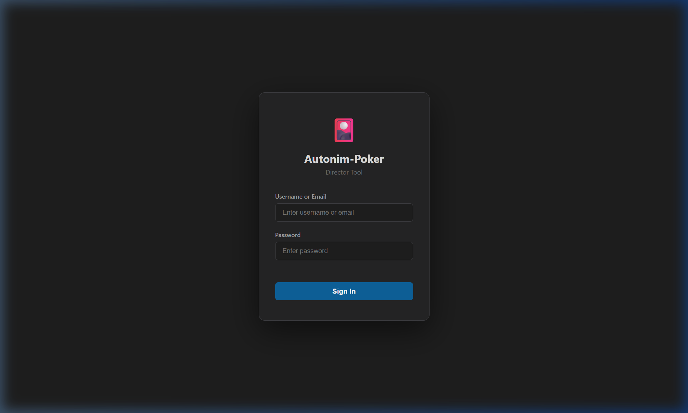
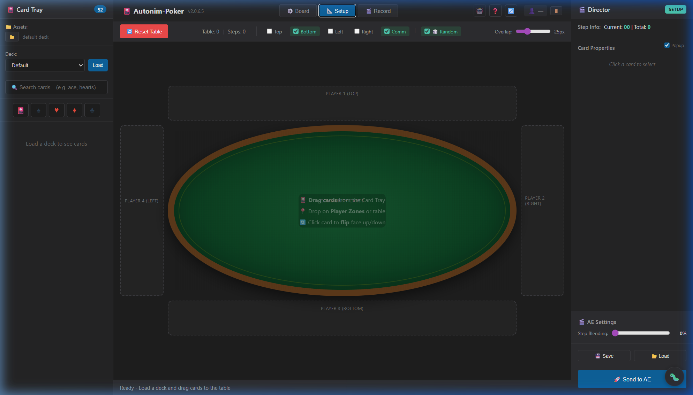

Getting Started
Cài đặt, đăng nhập và khám phá giao diện
1.1Yêu cầu hệ thống
| Thành phần | Yêu cầu tối thiểu | Khuyến nghị |
|---|---|---|
| After Effects | CC 2022 (v22.x)+ | CC 2024+ |
| Hệ điều hành | Windows 10 / macOS 10.14 | Windows 11 / macOS 13 |
| RAM | 8 GB | 16 GB+ |
| Scripting Access | Edit → Preferences → Scripting → Allow Scripts to Write Files | |
Plugin chạy trên nền tảng CEP (Common Extensibility Platform). Đảm bảo AE đã bật scripting mode — xem mục 7.1 nếu plugin không hiện.
1.2Cài đặt plugin
- Nhận folder plugin Autonim-Poker từ admin của team.
-
Mở Windows Explorer, gõ vào thanh địa chỉ:
%APPDATA%Hoặc nhấn Win + R → gõ
%APPDATA%→ Enter. -
Tìm đến thư mục:
Roaming → Adobe → CEP → extensionsNếu thư mục
CEPhoặcextensionschưa tồn tại → tạo mới thư mục đó. - Copy toàn bộ folder Autonim-Poker vào thư mục
extensions. -
Chạy file
enable-debug.reg(đi kèm plugin) để bật CEP Debug Mode.⚠️File
.regnày thêm keyPlayerDebugMode=1vào Registry. Cần chạy một lần duy nhất để AE nhận extension không cần ký số. - Restart After Effects (tắt hoàn toàn rồi mở lại).
- Vào menu Window → Extensions → Autonim-Poker.
Đường dẫn đầy đủ:
C:\Users\{username}\AppData\Roaming\Adobe\CEP\extensions\Autonim-Poker
1.3Đăng nhập
Khi mở plugin lần đầu, màn hình đăng nhập sẽ xuất hiện:
- Nhập Email và Password do admin cấp.
- Nhấn Login. Nếu thành công, plugin chuyển sang màn hình Board.
- Nếu thất bại → kiểm tra quyền
poker_accessvới admin. Xem 7.2 Lỗi đăng nhập.

Tài khoản mới cần admin bật quyền poker_access trước khi đăng nhập được.
Liên hệ admin nếu bị từ chối.
1.4Giao diện chính
Plugin hoạt động qua 3 phase tuần tự. Thanh phase nằm ở trên cùng:

1.5What's New in v2.0.6.5
Tổng hợp các tính năng và sửa lỗi từ v2.0.6.1 đến v2.0.6.5:
v2.0.6.5 — Stability & Bug Fixes
- Fix context menu chỉ hiện sau khi card đã di chuyển
- Fix nút "All" (Flip All, Slam All, Spin All) dựa trên actual moved cards
- Fix
handleResetTabletích hợp Undo/Autosave - Fix thiếu
applyBezierEasingtrong dealing, shiftZone, group-z animations
v2.0.6.3 — Deal Speed & Arrange Tools
- Deal Speed slider — điều chỉnh tốc độ chia bài (1-5 frames/card)
- Arrange Row/Column — sắp xếp multi-selected slots thành hàng/cột
- 🌀 Spin Effect — hiệu ứng xoay bài (X-rotation)
- Slot Fill — Auto Fill random hoặc Manual Fill shorthand
- Community Zone Settings — Row/Pile/Stack modes
- Save/Load Project — xuất/nhập toàn bộ project ra file JSON
v2.0.6.1 — OTA Stability
- Silent auto-check cho OTA updates
- Tránh "Update Failed" report sai khi vừa update xong
- Persist trạng thái "just updated" success
Board Setup
Layout bàn chơi, công cụ và zones
2.1Các loại layout
Poker
Texas Hold'em chuẩn. 4 player zones (Top, Bottom, Left, Right) + Community zone ở giữa. Mỗi zone có 2 slot hand card + 5 community card slots.
Pusoy
Fan layout kiểu Pusoy Dos. 13 lá xếp thành 3 hàng (3-5-5), tự xoay theo góc arc. Rotation do expression điều khiển (không baked keyframe).
Grid
Layout lưới tự do. Kéo thả card places vào bất kỳ vị trí nào. Kết hợp với Cloner để tạo hàng/cột/quạt nhanh.
Custom
Lưu layout tùy chỉnh vào localStorage. Load lại từ dropdown preset bất kỳ lúc nào. Xem 2.4.
2.2Board Tools
- Cloner
-
Nhân bản card places theo pattern. Card nguồn được tích hợp làm slot đầu tiên:
- Row — hàng ngang với khoảng cách đều
- Column — hàng dọc
- Arc — quạt theo góc xoay. Điều chỉnh spread angle và radius.
- Arrange Row / Column
- Chọn nhiều card places (Ctrl+click) → nhấn ↔ Row hoặc ↕ Column để sắp xếp thành hàng ngang/dọc với spacing đều. Điều chỉnh khoảng cách bằng slider.
- Stack
- Xếp chồng các slot đã chọn với overlap — dùng để tạo hiệu ứng stack bài.
- Dealing Slot
- Nhấn 🃏 Add Deal để thêm vị trí chia bài (tối đa 1). Kéo để đặt lại vị trí. Được dùng khi bật Dealing Card trong AE Settings.
- Delete Multi
- Chọn nhiều card places + nhấn Delete để xóa cùng lúc.
- Background
- Chọn màu nền (Solid Color), ảnh nền (Custom Image) hoặc Poker Table cho board canvas. Preview only — không ảnh hưởng AE export.
2.3Card Zones & Slots
Một Zone là vùng trên board chứa một hoặc nhiều Slot (vị trí đặt bài). Mỗi zone có các thuộc tính:
- Zone ID
- Tên định danh duy nhất (ví dụ:
player-top,community). Dùng trong AE để nhóm layers và áp expression. - Zone Position
- Vị trí zone trên board: Top, Bottom, Left, Right, Center. Ảnh hưởng đến thứ tự dealing round-robin.
- Default Face
- Khi bài được kéo vào zone này, mặc định sẽ là Face Up hay Face Down.
- Slot Count
- Số card places trong zone. Tạo nhanh bằng Cloner hoặc kéo thêm từ toolbar.
2.4Community Zone Settings
Khi chọn một Community Zone (CZ) marker trên board, panel bên phải hiện ra các tùy chỉnh:
- Mode: Row
- Các card xếp thành hàng ngang trong zone, phân bố đều theo chiều rộng. Phù hợp cho Community cards trong Poker (Flop, Turn, River).
- Mode: Pile
- Các card xếp chồng ngẫu nhiên với random rotation nhẹ. Tạo hiệu ứng stack bài tự nhiên.
- Mode: Stack
- Các card xếp chồng chính xác, offset nhẹ. Gọn gàng hơn Pile, phù hợp cho draw/discard pile.
- Width / Height
- Điều chỉnh kích thước vùng zone bằng slider. Width: 100-800, Height: 60-500.
Trong Board phase, click vào marker CZ để mở panel settings. Thay đổi áp dụng ngay lập tức.
2.5Lưu & Tải Layout
Lưu layout
- Sắp xếp layout theo ý muốn
- Nhấn Save trên Board toolbar
- Nhập tên cho layout → OK
- Layout lưu vào
localStorage
Tải & Xóa layout
- Mở dropdown Preset
- Chọn layout đã lưu (có prefix
saved:) - Nhấn Load để áp dụng
- Nhấn 🗑️ để xóa layout đó
Setup Phase
Kéo bài vào zone và thiết lập trạng thái ban đầu
3.1Card Tray
Card Tray là khu vực chứa 52 lá bài (cộng thêm joker nếu có). Mỗi lá bài hiển thị là icon nhỏ có thể kéo thả.
- Bài được sắp xếp theo suit (♠ ♥ ♦ ♣) và rank (A → K)
- Lá bài đã đặt vào zone sẽ mờ đi trong tray — tránh đặt trùng
- Hover vào lá bài để xem tên đầy đủ (ví dụ: Ace of Spades)
3.2Đặt bài vào Zone
- Xác nhận đang ở Setup phase (tab Setup được chọn trong thanh phase)
- Kéo một lá bài từ Card Tray
- Thả vào Slot trống trên board — lá bài hiện ngay với face orientation mặc định của zone
- Để di chuyển bài: kéo thả card từ slot này sang slot khác trong board
- Để xóa bài: kéo card ra ngoài board, hoặc right-click → Remove
Nếu bạn thả bài vào slot đã có bài, bài cũ sẽ swap về tray và bài mới sẽ vào slot đó.
3.3Thuộc tính Card
Mỗi card trong slot có thể được điều chỉnh:
- Face Up / Face Down
- Click checkbox cạnh card hoặc right-click → Flip. Face Down = chỉ thấy mặt lưng (back.png).
- Context Menu (right-click)
- Flip · Flip.Ani · Slam · Remove · Face Up All · Face Down All — áp dụng cho card hoặc toàn bộ zone.
3.4Slot Fill (Auto / Manual)
Khi layout đã có nhiều slot trống, bạn có thể fill nhanh bằng context menu:
🎲 Auto Fill
- Chọn slot trống (hoặc multi-select với Ctrl+Click)
- Right-click → 🎲 Auto Fill
- Plugin tự fill random card từ tray vào các slot đã chọn
✏️ Manual Fill
- Chọn slot trống → right-click → ✏️ Manual Fill
- Nhập shorthand card names:
As Kh 10d Qc 2s - A=Ace, K=King, Q=Queen, J=Jack, 2-10=Rank
s=♠, h=♥, d=♦, c=♣ - Nhấn Fill hoặc Enter để xác nhận
Manual Fill sẽ kiểm tra card đã tồn tại trên board — nếu đã used sẽ báo lỗi. Nhấn Escape để đóng overlay.
Recording & Animation
Ghi pose-to-pose và các tính năng animation
4.1Pose-to-Pose Workflow
Autonim-Poker dùng kỹ thuật pose-to-pose: bạn định nghĩa các trạng thái chính, plugin tự tạo keyframes chuyển tiếp.
Setup
Đặt bài vào zone, xác định trạng thái ban đầu
Record
Nhấn "Record" — phase chuyển sang Record mode
Pose
Di chuyển card, flip, slam tạo pose mới
Add Step
Nhấn "Add Step" — lưu snapshot pose này
Repeat
Lặp Pose → Add Step đến khi đủ các pose cần thiết
Mỗi Step là một snapshot toàn bộ trạng thái board. Plugin so sánh Step N và Step N-1 để tính delta và chỉ tạo keyframes cho các card thực sự thay đổi.
4.2Grouping Mode
Di chuyển nhiều card cùng lúc với cùng offset:
- Bật Enable Grouping trong Director Panel
- Click từng card để chọn — card được chọn sẽ nhích lên (lifted) để dễ nhận ra
- Kéo bất kỳ card nào trong nhóm → tất cả di chuyển theo cùng offset
- Mỗi lần click select/deselect tạo thành một bước trong step
Right-click khi đang ở Grouping Mode → "Flip All" / "Slam All" để áp dụng hiệu ứng cho toàn bộ nhóm cùng lúc.
4.3Auto-Record
Tự động ghi step sau mỗi thao tác, không cần nhấn "Add Step" thủ công:
- Bật Auto Record trong Grouping section của Director Panel
- Đặt thời gian countdown (1–10 giây)
- Di chuyển card → bộ đếm ngược bắt đầu → hết giờ → step tự lưu
- Nếu thực hiện thêm thao tác trước khi đếm xong → bộ đếm reset lại
Countdown 3-5 giây là tốt nhất khi làm việc theo nhịp độ tự nhiên. Dùng countdown ngắn hơn (1-2s) khi đã quen luồng.
4.4Card Actions
- Flip
- Lật bài tức thì (ngửa ↔ úp). Click checkbox hoặc right-click → Flip. Ghi vào delta của step hiện tại.
- Flip.Ani
- Lật bài với animation Y-rotation riêng biệt. Tạo keyframes flip độc lập với movement keyframes. Lật rõ ràng và có thể điều chỉnh timing riêng trong AE.
- Slam
- Hiệu ứng đập bài — scale bounce. Thường dùng khi reveal bài quan trọng hoặc muốn nhấn mạnh.
- 🌀 Spin NEW
- Hiệu ứng xoay bài theo trục X (X-rotation). Card xoay 360° tạo hiệu ứng spin ấn tượng. Trong Grouping Mode, dùng Spin All để áp dụng cho toàn bộ nhóm.
- Face Up / Face Down
- Set mặc định cho zone: bài mới kéo vào zone sẽ tự động face up hoặc face down.
4.5Dealing Card Animation
Tự động tạo animation chia bài từ một điểm trung tâm đến các zone theo thứ tự round-robin:
- Trong AE Settings panel, bật toggle Dealing Card
- Kéo icon dealing slot để đặt vị trí trên board (thường là giữa bàn)
- Điều chỉnh Deal Speed slider (1-5 frames/card):
- 1 f/card — Rất nhanh (chia bài tốc độ cao)
- 3 f/card — Mặc định (tự nhiên)
- 5 f/card — Chậm (dramatic, cinematic)
- Export sang AE → cards bay từ dealing slot đến từng zone
Round-robin order: Card 1→P1, Card 2→P2, …, Card N+1→P1, … Thứ tự giống chia bài thật trong poker.
Deal Speed slider hiện ước tính tổng thời gian dealing dựa trên số card và tốc độ đã chọn. Dealing dùng Z-lift arc + Bezier easing: card bay cao giữa đường với easing tự nhiên.
4.6Save / Load Project
Lưu và tải toàn bộ trạng thái project (board layout + cards + recorded steps) dưới dạng file JSON.
💾 Save Project
- Nhấn 💾 Save trong AE Settings panel
- File
.jsonđược download tự động - Chứa: board layout, card positions, face states, recorded steps, AE settings
📂 Load Project
- Nhấn 📂 Load trong AE Settings panel
- Chọn file
.jsonđã lưu trước đó - Plugin khôi phục toàn bộ trạng thái — sẵn sàng tiếp tục hoặc export
Load project sẽ ghi đè toàn bộ trạng thái hiện tại. Hãy save project hiện tại trước khi load file khác.
After Effects Export
Xuất animation sang AE với keyframes tự động
5.1Chuẩn bị Assets
Trước khi export, cần có thư mục ảnh card đúng format:
- Tên file card
ace_of_spades.png,two_of_hearts.png, …,king_of_clubs.png(lowercase, underscore)- Mặt lưng
back.png— ảnh mặt úp dùng chung cho tất cả card trong deck- Kích thước khuyến nghị
- 500×726px hoặc tỉ lệ tương đương (2:3). Plugin tự scale qua Card Scale slider.
- Color Profile
- PNG nên embed ICC sRGB. Plugin tự inject profile từ v2.0.5.1+.
Dùng Deck Prepper tool (trong tools/deck-prepper/) để
tự động rename và chuẩn bị toàn bộ bộ bài từ nguồn gốc.
5.2Quy trình Export
Assets Folder
Chọn thư mục chứa PNG cards đã chuẩn bị
AE Settings
Cài step duration, overlap, dealing toggle
Export to AE
Nhấn nút "Export to AE" — plugin gửi JSON sang ExtendScript
Comp Ready
AE tạo comp, import assets, bake tất cả keyframes
Sau khi export thành công, AE tạo ra:
- Main Comp — 1920×1080, chứa tất cả card layers với keyframes đã bake
- Card Pre-comps — mỗi card là pre-comp 2 layer (front + back) với Flip slider
- 🎛️ Controls Layer — layer điều chỉnh global parameters
5.3Control Layer
Layer 🎛️ Controls chứa các Expression Control sliders để
điều chỉnh toàn comp sau khi export, không cần re-export:
- Card Scale
- Kích thước tất cả card (default: 62%). Thay đổi mà không cần re-export.
- Fan Spacing
- (Pusoy) Điều chỉnh độ rộng quạt bài.
- Fan Curvature
- (Pusoy) Điều chỉnh độ cong arc của quạt.
- Zone Y / X Offset
- (Poker) Dịch chuyển toàn bộ zone theo trục Y hoặc X.
- Stroke Size
- Kích thước viền highlight khi card được select (0 = ẩn).
- Stroke Color
- Màu viền highlight (mặc định: vàng).
5.4Per-Card Controls
Mỗi card layer trong AE có 3 slider riêng trong Effects panel:
- Flip (0–100)
- Kéo để lật bài thủ công trong AE. 50 = giữa chừng (điểm đổi mặt), 100 = hoàn tất 180° Y rotation. Keyframes được bake từ Flip/Flip.Ani actions.
- Slam Scale
- Scale riêng cho card này, nhân với global Card Scale. Keyframes bake từ Slam actions trong Recording.
- Selection Size
- Override kích thước viền highlight cho card này. 0 = theo global Stroke Size.
5.5Step Blending (Overlap)
Slider Overlap trong AE Settings quyết định các step có chồng lên nhau không:
Overlap 0%
Tuần tự hoàn toàn. Step 2 chỉ bắt đầu sau khi Step 1 kết thúc hoàn toàn. Animation rõ ràng, từng bước.
Overlap 50%
Step 2 bắt đầu khi Step 1 đi được nửa thời gian. Animation mượt và tự nhiên hơn, phù hợp với nhiều card di chuyển.
Keyboard Shortcuts
Phím tắt tiện ích
FAQ & Troubleshooting
Xử lý các sự cố thường gặp
7.1Plugin không hiện trong After Effects
Plugin không xuất hiện trong Window → Extensions
- Kiểm tra phiên bản AE: yêu cầu CC 2019 (v16.x)+
- Xác nhận đã cài đúng file
.zxp(không phải.zip) - Restart After Effects sau khi cài
- Vào
Edit → Preferences → Scripting & Expressions→ bật "Allow Scripts to Write Files and Access Network" - Windows: Mở
regedit→ điều hướng đếnHKEY_CURRENT_USER\SOFTWARE\Adobe\CSXS.11→ tạo String ValuePlayerDebugMode=1
Panel trống / màn hình trắng khi mở plugin
- Right-click vào panel → Reload (hoặc nhấn Ctrl+F5 trong panel)
- Xóa CEP cache:
%AppData%\Adobe\CEP\cache\(Windows) - Đảm bảo
PlayerDebugMode = 1đã được set trong registry
7.2Lỗi đăng nhập
Login thất bại / bị loop màn hình đăng nhập
- Chưa được cấp quyền: Admin cần bật
poker_accesscho tài khoản - Sai password: Liên hệ admin để reset
- Firewall / VPN: Plugin cần kết nối server authentication — kiểm tra không bị block
- Token hết hạn: Đăng xuất hoàn toàn và đăng nhập lại
7.3Lỗi Export & Assets
Card không tìm thấy khi export (missing asset error)
- Đã chọn đúng Assets Folder chứa PNG cards chưa?
- Tên file phải đúng format:
ace_of_spades.png,back.png(lowercase, underscore) - Dùng Deck Prepper (
tools/deck-prepper/) để chuẩn bị - Kiểm tra file không bị locked hoặc read-only
PNG không hiện thumbnail trên Windows Explorer
File PNG cần có ICC color profile (sRGB). Plugin tự inject từ v2.0.5.1+:
- Re-download ảnh từ server (đã được fix tự động)
- Hoặc mở Photoshop → Save As → đảm bảo "Embed Color Profile" được check
7.4Lỗi Animation & AE
Bài bị ngược / lệch khi dùng layout quạt (Pusoy / Arc)
Đã được fix trong v2.0.6.0+. Nếu vẫn gặp:
- Kiểm tra đang dùng phiên bản mới nhất
- Pusoy fan: rotation tính qua expression — không bake keyframe rotation
- Cloner Arc: rotation baked vào keyframe — kiểm tra arc spread angle hợp lý
Cards bị xuyên qua nhau trong AE (3D Z-crossing)
AE 3D Z-spacing chỉ 0.01 per card — khi xoay, surfaces có thể intersect. Fix từ v2.0.6.0+:
- Dealing: Z-lift arc — cards bay cao giữa đường để tránh crossing
- Move/Swap: Card tự nhảy lên Z front (-200) khi di chuyển
- Nếu vẫn bị: giảm Card Scale slider → cards nhỏ hơn → ít overlap hơn
Timeline AE bị chậm / keyframes sai thứ tự
- Chậm: Giảm Step Blending (Overlap) về 0% để tuần tự rõ ràng
- Card đứng im: Kiểm tra comp duration đủ dài để chứa tất cả steps
- Flip không đúng: Kéo Flip slider trong Effects panel (0 = original, 100 = flipped)
7.5Cập nhật Plugin (OTA)
Plugin có hệ thống Over-the-Air (OTA) update tự động:
- Khi mở plugin, nó tự check phiên bản mới với server
- Nếu có update → icon ⚙️ hiện badge "Update available"
- Nhấn ⚙️ → chọn "Update Now"
- Chờ download hoàn tất
- Restart After Effects hoàn toàn để áp dụng
Sau khi update, phải đóng và mở lại AE hoàn toàn. Chỉ reload panel không đủ để áp dụng version mới.
Glossary
Thuật ngữ và định nghĩa
- Zone
- Vùng trên board chứa một hoặc nhiều Slot. Ví dụ:
player-top,community. Dùng để nhóm layers trong AE. - Slot
- Vị trí đặt bài trong một Zone. Một Zone có thể có nhiều Slot (ví dụ: 2 hand cards trong Poker zone).
- Step
- Snapshot toàn bộ trạng thái board tại một thời điểm. Plugin so sánh Step N và N-1 để tính delta và tạo keyframes chỉ cho card thay đổi.
- Preset
- Layout board đã lưu vào localStorage. Load lại từ dropdown Preset bất kỳ lúc nào mà không mất dữ liệu.
- Cloner
- Board tool nhân bản card places theo Row, Column, hoặc Arc pattern. Card nguồn được tích hợp làm slot đầu tiên.
- Control Layer
- Layer
🎛️ Controlstrong AE Main Comp chứa Expression Control sliders để điều chỉnh global parameters sau export. - Dealing
- Animation chia bài từ dealing slot đến các zone theo round-robin. Kích hoạt qua AE Settings → Dealing Card toggle.
- Pose-to-Pose
- Kỹ thuật animation: định nghĩa các trạng thái chính (key poses), phần mềm tự nội suy chuyển động giữa các pose.
- Hold Keyframe
- Loại keyframe trong AE giữ nguyên giá trị cho đến keyframe tiếp theo (không tween/ease). Plugin dùng loại này để animation rõ ràng, pose-to-pose.
- OTA (Over-the-Air)
- Hệ thống cập nhật plugin tự động qua internet, không cần cài lại
.zxpthủ công. - Z-lift Arc
- Kỹ thuật trong dealing animation: card bay lên cao theo trục Z giữa đường để tránh xuyên qua nhau trong AE 3D view.
- CEP
- Common Extensibility Platform — nền tảng Adobe cho phép chạy extensions HTML/CSS/JS trong các app Creative Cloud (After Effects, Premiere, Photoshop…).
- ExtendScript
- Ngôn ngữ scripting (JavaScript dialect) của Adobe để điều khiển AE từ phía native. Plugin dùng ExtendScript để tạo comp và bake keyframes.
- Step Blending / Overlap
- Tham số quyết định step tiếp theo bắt đầu khi nào. 0% = tuần tự hoàn toàn, 50% = step sau bắt đầu khi step trước đi nửa đường.
- Spin Effect
- Hiệu ứng xoay card theo trục X (X-rotation 360°). Tạo keyframes X-rotation trong AE. Có thể áp dụng riêng lẻ hoặc cho toàn group với Spin All.
- Deal Speed
- Số frames giữa mỗi lá bài khi chia (stagger). 1 f/card = nhanh, 5 f/card = chậm. Điều chỉnh bằng slider trong AE Settings khi Dealing Card bật.
- Slot Fill
- Tính năng fill nhanh card vào các slot trống. Auto Fill = random, Manual Fill = nhập shorthand (ví dụ: As Kh 10d).
- Bezier Easing
- Hàm easing tùy chỉnh dùng đường cong Bezier để tạo chuyển động mượt mà. Plugin dùng cho dealing, shiftZone và group-z animations.